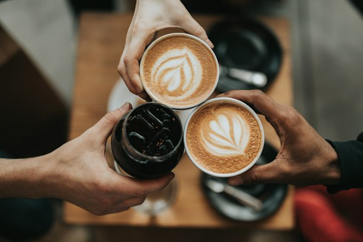

Espresso Altiplano
Extracción concentrada con cuerpo sedoso, acidez brillante y notas a panela y chocolate negro.
Precio: $10.000 COP
Somos una franquicia de cafeterias premium, especialisados en Granos cultivados en las montañas andinas del eje cafetero, nuestra unica meta en hacerte sentir especial y tranquilo con cada cafe servido.
En Café Altiplano creemos que cada taza cuenta la historia de la tierra que la vio nacer.
Nuestra promesa es sencilla: servirte café fresco de la más alta calidad, con trazabilidad completa desde la semilla hasta el sorbo final.
Una muestra de nuestras preparaciones más queridas por quienes nos visitan a diario.
Extracción concentrada con cuerpo sedoso, acidez brillante y notas a panela y chocolate negro.
Precio: $10.000 COP

Método de goteo manual que resalta la claridad aromática, con notas florales a jazmín y frutas cítricas.
Precio: $21.000 COP

Espresso doble combinado con leche texturizada al punto exacto de microespuma aterciopelada.
Precio: $15.500 COP
Aprende algunos de los términos que utilizamos cotidianamente en nuestras barras de café de especialidad.